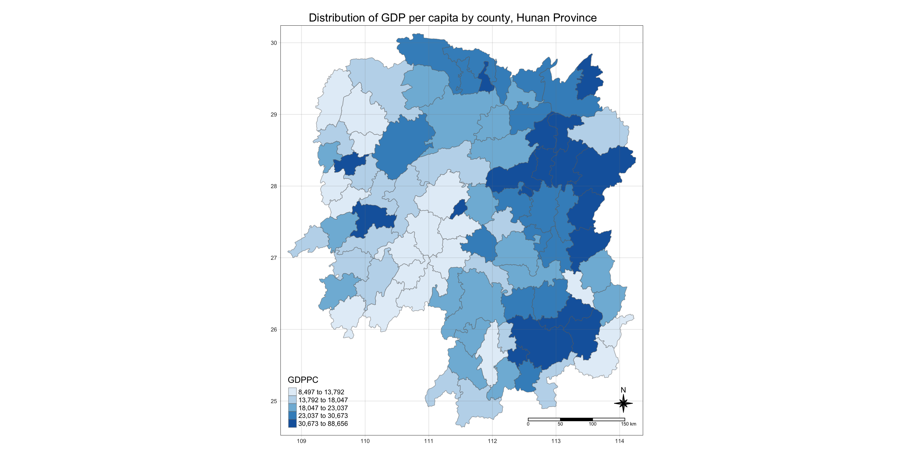

pacman::p_load(sf, sfdep, tmap, tidyverse)In-class Exercise 5: Global and Local Measures of Spatial Association: sfdep
1 Overview
In this in-class exercise, we will learn how to compute Global Measures of Spatial Autocorrelation (GMSA) by using sfdep package.
sfdep creates an sf and tidyverse friendly interface to the package as well as introduces new functionality that is not present in spdep.
sfdep utilizes list columns extensively to make this interface possible.
2 The Data
We will use following geospatial datasets in this exercise:
| Dataset | Description | Format |
|---|---|---|
| Hunan | Hunan county boundary layer geospatial data | ESRI shapefile |
| Hunan_2012 | Contains selected Hunan’s local development indicators in 2012 | CSV file |
3 Installing and launching the R packages
We will use following packages in this exercise:
| Package | Description |
|---|---|
| sf | Provides functions to manage, processing, and manipulate Simple Features, a formal geospatial data standard that specifies a storage and access model of spatial geometries such as points, lines, and polygons. |
| sfdep | Provides collection of functions to create spatial weights matrix objects from polygon ‘contiguities’, from point patterns by distance and tessellations. |
| tidyverse | Provides collection of functions for performing data science task such as importing, tidying, wrangling data and visualising data. |
| tmap | Provides functions for plotting cartographic quality static point patterns maps or interactive maps by using leaflet API |
To install and launch the four R packages.
4 Data Import and Preparation
4.1 Loading the data
In this section, we will learn how to bring a geospatial data and its associated attribute table into R environment. The geospatial data is in ESRI shapefile format and the attribute table is in csv fomat.
We use st_read() of sf package to import Hunan shapefile into R. The imported shapefile will be simple features Object of sf.
hunan <- st_read(dsn = "data/geospatial",
layer = "Hunan")Reading layer `Hunan' from data source
`/Users/cham/project/Geospatial-Analytics/chrismanafe/ISSS626-GAA/in_class_ex/in_class_ex05/data/geospatial'
using driver `ESRI Shapefile'
Simple feature collection with 88 features and 7 fields
Geometry type: POLYGON
Dimension: XY
Bounding box: xmin: 108.7831 ymin: 24.6342 xmax: 114.2544 ymax: 30.12812
Geodetic CRS: WGS 84Rows: 88
Columns: 8
$ NAME_2 <chr> "Changde", "Changde", "Changde", "Changde", "Changde", "Cha…
$ ID_3 <int> 21098, 21100, 21101, 21102, 21103, 21104, 21109, 21110, 211…
$ NAME_3 <chr> "Anxiang", "Hanshou", "Jinshi", "Li", "Linli", "Shimen", "L…
$ ENGTYPE_3 <chr> "County", "County", "County City", "County", "County", "Cou…
$ Shape_Leng <dbl> 1.869074, 2.360691, 1.425620, 3.474325, 2.289506, 4.171918,…
$ Shape_Area <dbl> 0.10056190, 0.19978745, 0.05302413, 0.18908121, 0.11450357,…
$ County <chr> "Anxiang", "Hanshou", "Jinshi", "Li", "Linli", "Shimen", "L…
$ geometry <POLYGON [°]> POLYGON ((112.0625 29.75523..., POLYGON ((112.2288 …Then we will import Hunan_2012.csv into R by using read_csv() of readr package. The output is R dataframe class.
hunan2012 <- read_csv("data/aspatial/Hunan_2012.csv")Rows: 88 Columns: 29
── Column specification ────────────────────────────────────────────────────────
Delimiter: ","
chr (2): County, City
dbl (27): avg_wage, deposite, FAI, Gov_Rev, Gov_Exp, GDP, GDPPC, GIO, Loan, ...
ℹ Use `spec()` to retrieve the full column specification for this data.
ℹ Specify the column types or set `show_col_types = FALSE` to quiet this message.Rows: 88
Columns: 29
$ County <chr> "Anhua", "Anren", "Anxiang", "Baojing", "Chaling", "Changn…
$ City <chr> "Yiyang", "Chenzhou", "Changde", "Hunan West", "Zhuzhou", …
$ avg_wage <dbl> 30544, 28058, 31935, 30843, 31251, 28518, 54540, 28597, 33…
$ deposite <dbl> 10967.0, 4598.9, 5517.2, 2250.0, 8241.4, 10860.0, 24332.0,…
$ FAI <dbl> 6831.7, 6386.1, 3541.0, 1005.4, 6508.4, 7920.0, 33624.0, 1…
$ Gov_Rev <dbl> 456.72, 220.57, 243.64, 192.59, 620.19, 769.86, 5350.00, 1…
$ Gov_Exp <dbl> 2703.0, 1454.7, 1779.5, 1379.1, 1947.0, 2631.6, 7885.5, 11…
$ GDP <dbl> 13225.0, 4941.2, 12482.0, 4087.9, 11585.0, 19886.0, 88009.…
$ GDPPC <dbl> 14567, 12761, 23667, 14563, 20078, 24418, 88656, 10132, 17…
$ GIO <dbl> 9276.90, 4189.20, 5108.90, 3623.50, 9157.70, 37392.00, 513…
$ Loan <dbl> 3954.90, 2555.30, 2806.90, 1253.70, 4287.40, 4242.80, 4053…
$ NIPCR <dbl> 3528.3, 3271.8, 7693.7, 4191.3, 3887.7, 9528.0, 17070.0, 3…
$ Bed <dbl> 2718, 970, 1931, 927, 1449, 3605, 3310, 582, 2170, 2179, 1…
$ Emp <dbl> 494.310, 290.820, 336.390, 195.170, 330.290, 548.610, 670.…
$ EmpR <dbl> 441.4, 255.4, 270.5, 145.6, 299.0, 415.1, 452.0, 127.6, 21…
$ EmpRT <dbl> 338.0, 99.4, 205.9, 116.4, 154.0, 273.7, 219.4, 94.4, 174.…
$ Pri_Stu <dbl> 54.175, 33.171, 19.584, 19.249, 33.906, 81.831, 59.151, 18…
$ Sec_Stu <dbl> 32.830, 17.505, 17.819, 11.831, 20.548, 44.485, 39.685, 7.…
$ Household <dbl> 290.4, 104.6, 148.1, 73.2, 148.7, 211.2, 300.3, 76.1, 139.…
$ Household_R <dbl> 234.5, 121.9, 135.4, 69.9, 139.4, 211.7, 248.4, 59.6, 110.…
$ NOIP <dbl> 101, 34, 53, 18, 106, 115, 214, 17, 55, 70, 44, 84, 74, 17…
$ Pop_R <dbl> 670.3, 243.2, 346.0, 184.1, 301.6, 448.2, 475.1, 189.6, 31…
$ RSCG <dbl> 5760.60, 2386.40, 3957.90, 768.04, 4009.50, 5220.40, 22604…
$ Pop_T <dbl> 910.8, 388.7, 528.3, 281.3, 578.4, 816.3, 998.6, 256.7, 45…
$ Agri <dbl> 4942.253, 2357.764, 4524.410, 1118.561, 3793.550, 6430.782…
$ Service <dbl> 5414.5, 3814.1, 14100.0, 541.8, 5444.0, 13074.6, 17726.6, …
$ Disp_Inc <dbl> 12373, 16072, 16610, 13455, 20461, 20868, 183252, 12379, 1…
$ RORP <dbl> 0.7359464, 0.6256753, 0.6549309, 0.6544614, 0.5214385, 0.5…
$ ROREmp <dbl> 0.8929619, 0.8782065, 0.8041262, 0.7460163, 0.9052651, 0.7…We will also update the attribute table of hunan’s SpatialPolygonsDataFrame with the attribute fields of hunan2012 dataframe. This is performed by using left_join() of dplyr package.
colnames(hunan)[1] "NAME_2" "ID_3" "NAME_3" "ENGTYPE_3" "Shape_Leng"
[6] "Shape_Area" "County" "geometry" colnames(hunan2012) [1] "County" "City" "avg_wage" "deposite" "FAI"
[6] "Gov_Rev" "Gov_Exp" "GDP" "GDPPC" "GIO"
[11] "Loan" "NIPCR" "Bed" "Emp" "EmpR"
[16] "EmpRT" "Pri_Stu" "Sec_Stu" "Household" "Household_R"
[21] "NOIP" "Pop_R" "RSCG" "Pop_T" "Agri"
[26] "Service" "Disp_Inc" "RORP" "ROREmp" hunan <- left_join(hunan,hunan2012) %>%
select(1:4, 7, 15)Joining with `by = join_by(County)`Rows: 88
Columns: 7
$ NAME_2 <chr> "Changde", "Changde", "Changde", "Changde", "Changde", "Chan…
$ ID_3 <int> 21098, 21100, 21101, 21102, 21103, 21104, 21109, 21110, 2111…
$ NAME_3 <chr> "Anxiang", "Hanshou", "Jinshi", "Li", "Linli", "Shimen", "Li…
$ ENGTYPE_3 <chr> "County", "County", "County City", "County", "County", "Coun…
$ County <chr> "Anxiang", "Hanshou", "Jinshi", "Li", "Linli", "Shimen", "Li…
$ GDPPC <dbl> 23667, 20981, 34592, 24473, 25554, 27137, 63118, 62202, 7066…
$ geometry <POLYGON [°]> POLYGON ((112.0625 29.75523..., POLYGON ((112.2288 2…4.2 Visualising Choropleth Map of GDPPC of Hunan province
Now, we are going to prepare a basemap and a choropleth map showing the distribution of GDPPC 2012 of Hunan Province.
tmap_mode("plot")tmap mode set to plottingtm_shape(hunan) +
tm_fill("GDPPC",
style = "quantile",
palette = "Blues",
title = "GDPPC") +
tm_layout(main.title = "Distribution of GDP per capita by county, Hunan Province",
main.title.position = "center",
main.title.size = 1.2,
legend.height = 0.45,
legend.width = 0.35,
frame = TRUE) +
tm_borders(alpha = 0.5) +
tm_compass(type="8star", size = 2) +
tm_scale_bar() +
tm_grid(alpha =0.2)
5 Global measures of Spatial Association
5.1 Derive Queen’s contiguity weights: sfdep methods
wm_q <- hunan %>%
mutate(nb = st_contiguity(geometry),
wt = st_weights(nb,
style = "W"),
.before = 1)Notice that
st_weights()provides tree arguments, they are:
nb: A neighbour list object as created by st_neighbors()
style: Default “W” for row standardized weights. The other accepted values are “B”, “C”, “U”, “minmax”, and “S”.
allow_zero: if TRUE, assigns zero as lagged value to zone without neighbors.
5.2 Compute Global Moran’s I
We will use global_moran() function to compute the Moran’s I value.
moranI <- global_moran(wm_q$GDPPC,
wm_q$nb,
wm_q$wt)
glimpse(moranI)List of 2
$ I: num 0.301
$ K: num 7.64Different from spdep package, the output of this function is a tibble data.frame.
5.3 Performing Global Moran’s I test
In general, a Moran’s I test will be conducted rather than merely calculating the Moran’s I statistic. Using the sfdep package, the Moran’s I test can be performed with the global_moran_test() function, as demonstrated in the code chunk below.
global_moran_test(wm_q$GDPPC,
wm_q$nb,
wm_q$wt)
Moran I test under randomisation
data: x
weights: listw
Moran I statistic standard deviate = 4.7351, p-value = 1.095e-06
alternative hypothesis: greater
sample estimates:
Moran I statistic Expectation Variance
0.300749970 -0.011494253 0.004348351 There is sign of positive autocorrelation (derived from Moran I statistic).
5.4 Perfoming Global Moran’s I permutation test
In practice, a Monte Carlo simulation should be used to perform the statistical test. In the sfdep package, this is supported by the global_moran_perm() function.
Let us use set.seed() before performing simulation. This is to ensure that the computation is reproducible.
set.seed(1234)Now we will perform Monte Carlo simulation using global_moran_perm().
global_moran_perm(wm_q$GDPPC,
wm_q$nb,
wm_q$wt,
nsim = 99) # means running this 100 times because it started from 0
Monte-Carlo simulation of Moran I
data: x
weights: listw
number of simulations + 1: 100
statistic = 0.30075, observed rank = 100, p-value < 2.2e-16
alternative hypothesis: two.sidedThe statistical report indicates that the p-value is smaller than the alpha value of 0.05. Therefore, we have sufficient statistical evidence to reject the null hypothesis that the spatial distribution of GDP per capita resembles a random distribution (i.e., is spatially independent). Since the Moran’s I statistic is greater than 0, we can infer that the spatial distribution exhibits signs of clustering.
6 Local measures of Spatial Association
6.1 LISA map
LISA map is a categorical map that illustrates spatial clusters and outliers. The map identifies two types of outliers: High-Low and Low-High, and two types of clusters: High-High and Low-Low. Essentially, a LISA map is an interpreted visualization that combines the local Moran’s I values of geographical areas with their respective p-values to show statistically significant spatial patterns.
6.2 Computing local Moran’s I
Now, we will compute Local Moran’s I of GDPPC at county level by using local_moran() of sfdep package.
lisa <- wm_q %>%
mutate(local_moran = local_moran(
GDPPC, nb, wt, nsim = 99),
.before = 1) %>%
unnest(local_moran)
Note
The output of local_moran() is a sf data.frame containing the columns ii, eii, var_ii, z_ii, p_ii, p_ii_sim, and p_folded_sim.
- ii: local moran statistic
- eii: expectation of local moran statistic; for localmoran_permthe permutation sample means
- var_ii: variance of local moran statistic; for localmoran_permthe permutation sample standard deviations
- z_ii: standard deviate of local moran statistic; for localmoran_perm based on permutation sample means and standard deviations p_ii: p-value of local moran statistic using pnorm(); for localmoran_perm using standard deviatse based on permutation sample means and standard deviations p_ii_sim: For
localmoran_perm(),rank()andpunif()of observed statistic rank for [0, 1] p-values usingalternative=-p_folded_sim: the simulation folded [0, 0.5] range ranked p-value (based on https://github.com/pysal/esda/blob/4a63e0b5df1e754b17b5f1205b cadcbecc5e061/esda/crand.py#L211-L213) - skewness: For
localmoran_perm, the output of e1071::skewness() for the permutation samples underlying the standard deviates - kurtosis: For
localmoran_perm, the output of e1071::kurtosis() for the permutation samples underlying the standard deviates.
6.3 Visualising local Moran’s I
We will use tmap package to prepare choropleth map using value in the ii field.
tmap_mode("plot")tmap mode set to plottingtm_shape(lisa) +
tm_fill("ii") +
tm_borders(alpha = 0.5) +
tm_view(set.zoom.limits = c(6,8)) +
tm_layout(
main.title = "local Moran's I of GDPPC",
main.title.size = 2)Variable(s) "ii" contains positive and negative values, so midpoint is set to 0. Set midpoint = NA to show the full spectrum of the color palette.6.4 Visualising p-value of local Moran’s I
We will use tmap package to prepare choropleth map using value in the p_ii_sim field.
tmap_mode("plot")tmap mode set to plottingtm_shape(lisa) +
tm_fill("p_ii_sim") +
tm_borders(alpha = 0.5) +
tm_view(set.zoom.limits = c(6,8)) +
tm_layout(
main.title = "p-value of Local Moran's I",
main.title.size = 2
)For p-values, the appropriate classification should be 0.001, 0.01, 0.05 and not significant instead of using default classification scheme.
6.5 Visualising local Moran’s I and p-value
For effective comparison, we will plot both maps next to each other
tmap_mode("plot")tmap mode set to plottingmap1 <- tm_shape(lisa) +
tm_fill("ii") +
tm_borders(alpha = 0.5) +
tm_view(set.zoom.limits = c(6,8)) +
tm_layout(
main.title = "Local Moran's I of GDPPC",
main.title.size = 0.8
)
map2 <- tm_shape(lisa) +
tm_fill("p_ii") +
tm_borders(alpha = 0.5) +
tm_view(set.zoom.limits = c(6,8)) +
tm_layout(
main.title = "p-value of Local Moran's I",
main.title.size = 0.8
)
tmap_arrange(map1, map2, ncol = 2)Variable(s) "ii" contains positive and negative values, so midpoint is set to 0. Set midpoint = NA to show the full spectrum of the color palette.6.6 LISA map
LISA map is a categorical map showing outliers and clusters. There are two types of outliers namely: High-Low and Low-High outliers.
Likewise, there are two type of clusters namely: High-High and Low-Low clusters. In fact, LISA map is an interpreted map by combining local Moran’s I of geographical areas and their respective p-values.
6.7 Visualising LISA map
In the lisa sf data frame, there are three fields that contain the LISA categories: mean, median, and pysal. Typically, classification based on the mean field is used, as demonstrated in the code chunk below.
lisa_sig <- lisa %>%
filter(p_ii_sim < 0.05)
tmap_mode("plot")tmap mode set to plottingtm_shape(lisa) +
tm_polygons() +
tm_borders(alpha = 0.5) +
tm_shape(lisa_sig) +
tm_fill("mean") +
tm_borders(alpha = 0.4)Warning: One tm layer group has duplicated layer types, which are omitted. To
draw multiple layers of the same type, use multiple layer groups (i.e. specify
tm_shape prior to each of them).7 Hot spot and cold spot area analysis
Hot Spot and Cold Spot Analysis (HCSA) uses spatial weights to identify locations of statistically significant hot spots and cold spots within a spatially weighted attribute. These spots are identified based on a calculated distance that groups features when similar high (hot) or low (cold) values are found in proximity to one another. The polygon features typically represent administrative boundaries or a custom grid structure.
7.1 Computing local Gi* statistics
7.1.1 Derive spatial weight matrix
As with most spatial analyses, we first need to derive a spatial weight matrix before computing the local Gi* statistics. The code chunk below demonstrates how to derive a spatial weight matrix using functions from the sfdep package, combined with the tidyverse approach.
wm_idw <- hunan %>%
mutate(nb = include_self(
st_contiguity(geometry)),
wts = st_inverse_distance(nb,
geometry,
scale = 1,
alpha = 1),
.before = 1)! Polygon provided. Using point on surface.Warning: There was 1 warning in `stopifnot()`.
ℹ In argument: `wts = st_inverse_distance(nb, geometry, scale = 1, alpha = 1)`.
Caused by warning in `st_point_on_surface.sfc()`:
! st_point_on_surface may not give correct results for longitude/latitude data- Gi* and local Gi* are distance-based spatial statistics, so distance-based methods, rather than contiguity methods, should be used to derive the spatial weight matrix.
- Since we will be computing Gi* statistics, the
include_self()function is applied to ensure that each location is considered in its own neighborhood.
7.1.2 Compute local Gi* statistics
Now, we will compute the local Gi* by using the code chunk below.
HCSA <- wm_idw %>%
mutate(local_Gi = local_gstar_perm(
GDPPC, nb, wts, nsim = 99),
.before = 1) %>%
unnest(local_Gi)
HCSASimple feature collection with 88 features and 18 fields
Geometry type: POLYGON
Dimension: XY
Bounding box: xmin: 108.7831 ymin: 24.6342 xmax: 114.2544 ymax: 30.12812
Geodetic CRS: WGS 84
# A tibble: 88 × 19
gi_star cluster e_gi var_gi std_dev p_value p_sim p_folded_sim skewness
<dbl> <fct> <dbl> <dbl> <dbl> <dbl> <dbl> <dbl> <dbl>
1 0.261 Low 0.00126 1.07e-7 0.283 7.78e-1 0.66 0.33 0.783
2 -0.276 Low 0.000969 4.76e-8 -0.123 9.02e-1 0.98 0.49 0.713
3 0.00573 High 0.00156 2.53e-7 -0.0571 9.54e-1 0.78 0.39 0.972
4 0.528 High 0.00155 2.97e-7 0.321 7.48e-1 0.56 0.28 0.942
5 0.466 High 0.00137 2.76e-7 0.386 7.00e-1 0.52 0.26 1.32
6 -0.445 High 0.000992 7.08e-8 -0.588 5.57e-1 0.68 0.34 0.692
7 2.99 High 0.000700 4.05e-8 3.13 1.74e-3 0.04 0.02 0.975
8 2.04 High 0.00152 1.58e-7 1.77 7.59e-2 0.16 0.08 1.26
9 4.42 High 0.00130 1.18e-7 4.22 2.39e-5 0.02 0.01 1.20
10 1.21 Low 0.00175 1.25e-7 1.49 1.36e-1 0.18 0.09 0.408
# ℹ 78 more rows
# ℹ 10 more variables: kurtosis <dbl>, nb <nb>, wts <list>, NAME_2 <chr>,
# ID_3 <int>, NAME_3 <chr>, ENGTYPE_3 <chr>, County <chr>, GDPPC <dbl>,
# geometry <POLYGON [°]>7.2 Visualising Gi*
In the code chunk below, tmap functions are used to plot the local Gi* (i.e. gi_star) at the province level.
tmap_mode("plot")tmap mode set to plottingtm_shape(HCSA) +
tm_fill("gi_star") +
tm_borders(alpha = 0.5) +
tm_view(set.zoom.limits = c(6,8))Variable(s) "gi_star" contains positive and negative values, so midpoint is set to 0. Set midpoint = NA to show the full spectrum of the color palette.7.3 Visualising p-value of HCSA
In the code chunk below, tmap functions are used to plot the p-values of local Gi* (i.e. p_sim) at the province level.
tmap_mode("plot")tmap mode set to plottingtm_shape(HCSA) +
tm_fill("p_sim") +
tm_borders(alpha = 0.5)7.4 Visualising local hot spot and cold spot areas
Now, we will plot the significant (i.e. p-values less than 0.05) hot spot and cold spot areas by using appropriate tmap functions as shown below.
tmap_mode("plot")tmap mode set to plottingmap1 <- tm_shape(HCSA) +
tm_fill("gi_star") +
tm_borders(alpha = 0.5) +
tm_view(set.zoom.limits = c(6,8)) +
tm_layout(main.title = "Gi* of GDPPC",
main.title.size = 0.8)
map2 <- tm_shape(HCSA) +
tm_fill("p_value",
breaks = c(0, 0.001, 0.01, 0.05, 1),
labels = c("0.001", "0.01", "0.05", "Not sig")) +
tm_borders(alpha = 0.5) +
tm_layout(main.title = "p-value of Gi*",
main.title.size = 0.8)
tmap_arrange(map1, map2, ncol = 2)Variable(s) "gi_star" contains positive and negative values, so midpoint is set to 0. Set midpoint = NA to show the full spectrum of the color palette.
8 Reference
Kam, T. S. Global and Local Measures of Spatial Association - sfdep methods. ISSS626 Geospatial Analytics and Applications. https://isss626-ay2024-25aug.netlify.app/in-class_ex/in-class_ex05/in-class_ex05